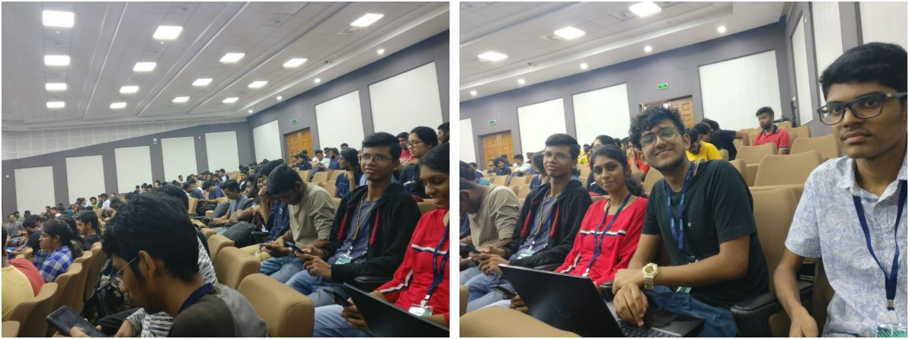
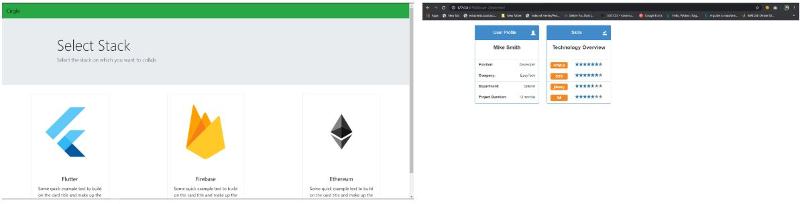
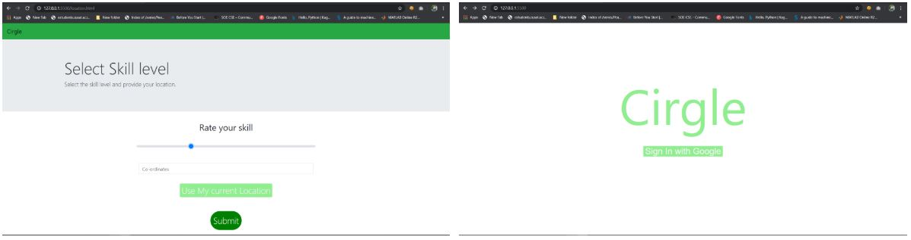
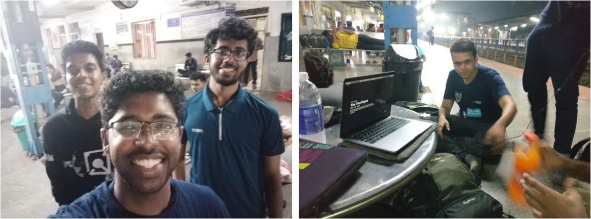
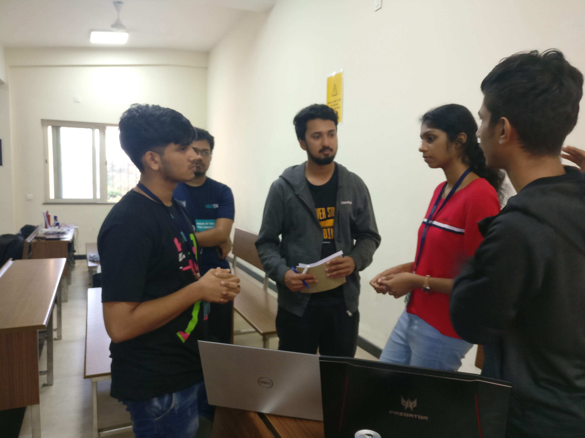

Under the Coding Hood Hackverse 2020
At NIT-K, Surathkal on 25th and 26th January
Sometime in October, Utkarsh Raj from CUSAT asks if I am interested to go for a hackathon listed on Devfolio called HackVerse. This was a few weeks after InOut Hackathon and I knew for a fact (from that experience) that Devfolio Hackathons are on a whole other spectrum level of awesomeness. So I agreed and together (along with his classmate Ravi Jyothi) we registered as Team Fortitude.
Our initial idea was to develop a chapter summarizer application to help students intake big volumes of textbook content in daily dosages thus gaining constant momentum. However, Utkarsh had gone for HackOff Hackathon at VIT, Vellore (another Devfolio Hackathon) and tried this idea — which was not quite well received as an existing solutions is doing quite well. Thus we continued brainstorming until we settled for the following idea (spoiler: We changed this idea during the hackathon):
Idea #1
Most of us are clueless about the options we have at college to up skill oneself, the choices one has to make as a result and the effect it has in your long term plan of molding your career. Most of the times it results in a hit-and-trial situation where the lucky one’s find gold while most of the rest and filled with regret and confusion by the end of their time in college.
So to provide means to understand the scope and the paths forward, I thought of developing ‘Choose Your Own Adventure’ game where the user plays a simulation where we ask questions and based on the choices they make, their points change and in the end of 4 years of simulation, we contrast and see which alumni best matches with the path she chose — and thus connect the two. If dissatisfied, the user can play the game again this time with different options and see what other endings you get.
We met up a week before at CUSAT to discuss about the same. I decided to use Twine to design the story, Ravi said he will look into Flutter App Development for the front end, and Utkarsh said he will take care of the backend using Firebase. However, that week went past quite fast and we all could not find the time to set up our systems suitably.
Friday
I make it to Ernakulam South railway station. Ameen, Rindish and Afnan join in a while. We departed around 8.20 PM. Utkarsh and Ravi boarded from Aluva half an hour later. We discussed a while about the ideas to include in our product. After dinner, we went to sleep.
Saturday
Devdutt wakes me up at Suratkal. Apparently we reached 30 minutes early. Much to my surprise, Abhishek from CET is also there. Well, hackathon already looks promising.
We took two autos and reached the college by 5.45 AM. Nishant our point of contact was already at the front gate and in good spirits. We were escorted to our hostel where we freshened up and got some sleep. Around 8.30 AM we headed off to the venue — Lecture Complex Hall.
We got to meet the other folks from my college who also came for the hackathon. After breakfast, we chilled for a while until the opening ceremony.
The inaugural ceremony was spectacular. Notable folks from the industry shared their words of wisdom to the participants on how to be industry ready through hackathons and other competitions.
- Professor Reddy commended the organizing team for coming up with the name of HackVerse for verse meant to condense a deep message in a simple manner — much as what this hackathon hopes to see in the projects to be built in the time to come. He explained how time is finite thus weekend hacks is a great way to maximize and learn.
- The CTO of Well Fargo explained how hackathons challenge participants to adopt and find potential of new technologies in a world of great uncertainty, high stakes and opportunity cost. He believes a much needed skill for the industry is to have people who are collaborative, creative and capable of delivering results under pressure. The success of your venture lies not merely in the proof concept but in finding its place in the real world market.
- Dr. Divakar, the director of Google Cloud India delivered a very intriguing speech that struck a chord with most students. He beleives that 3 buckets exists: (#1) Industry, (#2) Tech People, and (#3) Students. The industry is slow and fearful while students are fast and fearless. For students to transition in to Tech People profile means to work at a place that scales up like an enterprise and innovates like a startup. The industry focuses on User needs. He shared 3 critical principles: <#1> What got you here won’t get you there. You need to continuously be learning. <#2> Understand whether you are running or sprinting in this marathon of a journey we take in the world of tech. Patience is important. <#3> Seek knowledge, and money will follow. Find a purpose worth pursuing and people will want your expertise to bring out the best results.
Extraordinary people are ordinary people with extra thinking

After the inaugural ceremony, the following tech talk sessions were there:
- Aravind from Elastic Search explained how search plays a critical role in multiple sectors. The Elastic stack includes Kibana, Elastic Search, Beats, and Logstash. To learn more about it, click here and here.
- Containers by Saurabh Gupta: The speaker from Digital Ocean explained the transition from Devs to Ops as two units to a combined entity called DevOps to handle Deployment fails. Implementing is not the same as evaluating, especially when a community is lacking. We must give time for tech to mature. Startups are the first adopters but MNCs wait to see results.
The ones who climb up the ladder are those who pick up new skills very quick and go beyond the comfort zone.
- Technologists in the Financial Sector, by Bharat, CTO, Wells Fargo: He explained how Behavioral Banking takes different approaches for different people. It takes a risk model to assess the potential failure cases in transactions. He went on to talk about High Frequency Trading where nanosecond variations play a big factor in the success of a trade.
Work in an area that excites you. Put your best in your work.
During these talks, I was introduced to a new concept: Developer Experience! DX is for developers what UX is for Users :)
I skipped taking notes for a few talk sessions so apologies for the incomplete list. The talks concluded by 3.45 PM I believe. The organizers informed us of the judging criteria factors:
- Originality
- Business Opportunity/ Social relevance
- Innovation
- Novelty
- Time to market
- Potential
Personally, our idea may seem new, yet it won’t stand out when compared to the amazing machine learning based projects that other teams built. Nevertheless, we were here to have a start, and that I am certain we will achieve.
Hackathon started shortly, and we moved to classroom to set up our device.
We had a discussion about the idea of UniSim but soon realized that it is not good enough considering the fact that it is a one-time-use app. We started to stop seeing value in it. Instead, when I spoke about the idea of Cirgle by Gopi Chetan, Utkarsh sounded excited and thus we decided to pivot at 10 PM.
Idea #2
There is no one good social network for programmers that encourages in person meetings. Sure, Reddit forums, facebook groups, DevRant try to achieve this yet we found a few challenges that must be tackled first. In our idea, we imagined to use the 6 stage model to set barriers, use geographical location to provide city based news feeds on what projects others are working and connect them on the basis of experience level as well as the tech stack.
I agree the idea lacks mention-worthy originality but we could see the potential it held if implemented right in the real world.
Ravi and Utkarsh tried to work on the Firebase backend while I tried to learn flutter. Setting it up took a couple of hours itself. They considered making PWA (Progressive Web App) when a flutter app seemed unrealistic within the time frame. Finally we tried to get a basic website done using HTML and CSS.
I took break quite often to play chess and talk to others. I had a lot of fun learning concepts from Arun, a student from CET who has a very deep manner of thinking. Yet at times I felt lonely as I was unable to get the work done in time. Thankfully, the volunteers offered refreshments and I played quite a bit of music to bridge the gaps.
I slept for 3 hours from 4 AM to 7 AM. The other two slept very little to ensure we had results to show. I commend their spirit.
Sunday
Being the republic day, we were taken to witness the march past in the campus by the NSS and students. It was really well done but unfortunately I did not have my phone around to take photographs.
Back at the venue, we tinkered bit by bit. These are the screenshots of what we created in the end.
 
Denver from Devfolio reviewed our work. While he did not seem impressed, he did encourage us to continue working on it in the time to come.
Here are a few pictures from the event> Click here
After dinner, we took a train to Manglore and then waited till 3 AM for the train. Had some quality time with friends.
 
Originally published at https://medium.com/@joelvzach/under-the-coding-hood-hackverse-2020-aab616200a06 on February 2, 2020